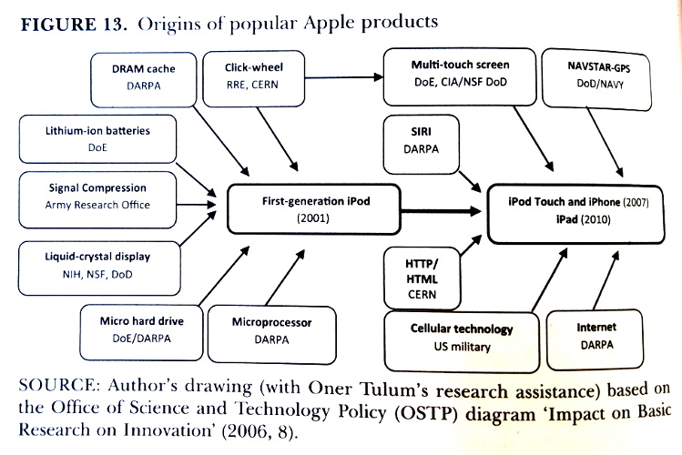

Free Culture
in an
Expensive World
OpenSourceBridge 2016
Shauna Gordon-McKeon - @shauna_gm
Thanks for having me!
Humans have been fighting over resources for tens of thousand of years with words and with weapons
My original proposal centered this talk around a project of mine.
So instead, I'm going to take you on a whirlwind tour, covering:
"Free as in speech, not as in beer"
I don't like this catchphrase
The freedom to run the program as you wish, for any purpose (freedom 0).
The freedom to study how the program works, and change it so it does your computing as you wish (freedom 1).
The freedom to redistribute copies so you can help your neighbor (freedom 2).
The freedom to distribute copies of your modified versions to others (freedom 3).
The first two freedoms in this definition revolve around personal liberty.
The freedom to run the program as you wish, for any purpose (freedom 0).
The freedom to study how the program works, and change it so it does your computing as you wish (freedom 1).
The freedom to redistribute copies so you can help your neighbor (freedom 2).
The freedom to distribute copies of your modified versions to others (freedom 3).
They make claims about how software should be distributed.
"Going back to their houses, I first heard the phrase “We don’t discuss money.”
My mom discussed money, my dad, far away in northern California hardly discussed anything
else. How could you not discuss money? It was like a family that announce they didn’t allow
the mention of food. Or hope."
- Quinn Norton, Count
Post from Quinn Norton that stuck with me.
Freedom from want, in our capitalist society, usually means having money.
But of course, not all free culture activists do ignore money.
"Open source enables a development method for software that harnesses the power of distributed peer
review and transparency of process. The promise of open source is higher quality, better reliability,
greater flexibility, lower cost , and an end to predatory vendor lock-in."
Open Source Initiative, steward for OS definition, highlights market competitiveness of FOSS
Models
support, training and integration
Best known example: red hat - 8000 employees, over a billion in revenue
Models
support, training and integration
vendor-neutral corporate foundation
"Who Writes Linux" 2015 states over 80% of contribs are employeed by companies, 11.8% unpaid.
Models
support, training and integration
vendor-neutral corporate foundation
affiliate advertising
hosting
Another model is Mozilla Firefox. Arguably this should be filed under not-for-profit.
Models
support, training and integration
vendor-neutral corporate foundation
affiliate advertising
hosting
freemium
open core
dual licensing
That's the famous ones! What else?
Models
support, training and integration
vendor-neutral corporate foundation
affiliate advertising
hosting
freemium
open core
dual licensing
sponsored by proprietary company
customization through agencies
freelance development
bounties
Google: Go, Angular, Android, Chromium (note: Chrome/Chromium is "freemium")
With so many great examples, tempting to say "open source has won".
"Although the Open Source Initiative suggests "the promise of open source is better quality, higher reliability, more flexibility," this promise is not always realized. Although we do not often advertise the fact, any user of an early-stage free software project can explain that free software is not always as convenient, in purely practical terms, as its proprietary competitors. Free software is sometimes low quality. It is sometimes unreliable. It is sometimes inflexible."
- Benjamin Mako Hill, When Free Software Isn't Better
Benjamin Mako Hill wrote a post back in 2010 where he points out the flaws in the OSI’s definition:
(More) Models
volunteer
First off – the most common open source model: volunteering.
(More) Models
volunteer
software-focused non-profit
Mozilla (kinda). More famously: Wikipedia. $70 mil a year in donations, 280 staff (yes, I did get that info from their wikipedia page)
I think Django is pretty sadly underfunded given the # of projects and companies that use it, so I've included it here.
(More) Models
volunteer
software-focused non-profit
other non-profit
government
academia
Other-focused: Sunlight, COS, ONA. These are just three I've actively worked with or volunteered for - there are hundreds more.
(More) Models
volunteer
software-focused non-profit
other non-profit
government
academia
crowdfunding
grants
fellowships, internships & retreats
One-off - Kickstarter, Indiegogo; ongoing - Patreon; experimental: Snowdrift
(More) Models
volunteer
software-focused non-profit
other non-profit
government
academia
crowdfunding
grants
fellowships, internships & retreats
“Shauna,” you might be ready to protest. “You’ve just named a ton of projects that are funded in a variety of ways. Surely one of these options will work for me and/or my project!”
What's the problem?
Let's take a moment to define them, because without clearly defining our problems we won't know what success looks like.
Problem 1
Key technologies are still proprietary
Widely used by non-developers
Widely used by developers
Likely to influence future technology
Intersect with other areas of concern
Measure success by: how competitive open source projects are in these key areas.
“Key technologies” is an ill-defined and ever-changing term. The FSF has a high priority projects list that's a good start.
Problem 2
Many projects are not 'well rounded'
Design
UX research
Documentation
Translation
Outreach
Teaching & mentorship, including technical mentorship
Community management
Project management
Marketing & publicity
Measure success by: how many non-coders are in our communities and how prominent they are.
Why are so many of our projects not competitive? In part, not 'well rounded'. Over-emphasize code contributions, and in particular new feature development over easing technical debt.
Problem 3
Lack of diversity
Recommended: The Ethics of Unpaid Labor and the OSS Community by Ashe Dryden
Measure success by: if our communities become as diverse as the general population.
Not representative of general population. In part because most forms of oppression have a hefty financial impact.
Problem 4
Burnout
Measure success by: if our community members are generally happy and not stressed.
A way of measuring success here is surveying open source community members and seeing if they report decreased stress, increased happiness, a desire to continue working on their projects and within open source as a whole, and a sense that they and their communities are equal to the challenges ahead of them.
Problem 4
Burnout
Measure success by: if our community members are generally happy and not stressed.
Four ways we're currently struggling, and four ways to measure success.
Fear of Money
Ashe's essay in response to a post by David Heinemeier Hansson, aka DHH, aka creator of Ruby on Rails
"External, expected rewards diminish the intrinsic motivation of the fundraising open-source contributor. It risks transporting a community of peers into a transactional terminal. And that buyer-seller frame detracts from the magic that is peer-collaborators."
- David Heinemeier Hansson, The perils of mixing open source and money
That bit about the magic of peer collaboration resonates with me. But there’s another line in this quote that sticks with me, and not in a good way: “expected rewards diminish intrinsic motivation”.
"External, expected rewards diminish the intrinsic motivation of the fundraising open-source contributor. It risks transporting a community of peers into a transactional terminal. And that buyer-seller frame detracts from the magic that is peer-collaborators."
- David Heinemeier Hansson, The perils of mixing open source and money
Social psych jargon. Translated it means: "If you inherently like or want to do something..."
"External, expected rewards diminish the intrinsic motivation of the fundraising open-source contributor. It risks transporting a community of peers into a transactional terminal. And that buyer-seller frame detracts from the magic that is peer-collaborators."
- David Heinemeier Hansson, The perils of mixing open source and money
are Ariely and Kohn wrong? not necessarily. social psychology is a troubled field. & I say this as a former social psychologist.
Fear of Corporations
I’ve already highlighted a number of open source projects supported by for-profit companies.
Are for-profit companies good or bad for open source?
What kinds of negative influences have they had? What kind of positive ones?
How do licensing decisions, governance structures or business models change their influence?
Does the company size, how the company was founded, or where the company was incorporated play a role?
What company behavior is unacceptable, and what's just annoying?
So scratch out the question “are companies good for open source?” It’s way too broad. Instead, I want to know...
Are for-profit companies good or bad for open source?
What kinds of negative influences have they had? What kind of positive ones?
How do licensing decisions, governance structures or business models change their influence?
Does the company size, how the company was founded, or where the company was incorporated play a role?
What company behavior is unacceptable, and what's just annoying?
Here's a quick case study: 2004 "open source" SugarCRM released. Quickly popular, lots of downloads, tens of mil in VC investment.
Are for-profit companies good or bad for open source?
What kinds of negative influences have they had? What kind of positive ones?
How do licensing decisions, governance structures or business models change their influence?
Does the company size, how the company was founded, or where the company was incorporated play a role?
What company behavior is unacceptable, and what's just annoying?
There are a lot of stories to be told and lessons to be learned here, and I’m looking forward to that.
Fear of Communism
In 2005, Bill Gates famously called FOSS activists "new modern-day sort of communists"

Figure 13. Origins of popular Apple products. Copied from The Entrepreneurial State –
Debunking Public vs. Private Sector Myths (p. 116), by M. Mazzucato, 2013, Anthem Press.
Take, for example, Apple’s success.
Figure 13. Origins of popular Apple products. Copied from The Entrepreneurial State –
Debunking Public vs. Private Sector Myths (p. 116), by M. Mazzucato, 2013, Anthem Press.
Other technologies - internet and email (DARPA); Tor (onion routing invented at naval research lab, currently funded by various depts)
Gov't offered up Federal Source Code Policy for public comment.
Of course, governmental intervention isn’t the only way for people to act collectively.
Many other ways to act collectively besides government and unions.
Tragedy of the Commons (cont)
Ostrom & Hess see information as a common-pool resource, rather than an "open access" resource (Lessig, Benkler).
Distinction? Exclusion.
Exclusion feels anathema in open source - but what ideas can we come up with?
Fair source license Stronger membership organizations with greater benefits
Exclusion not on code use but on use of community time & labor
Next Steps
Getting to the end of the talk, so let's focus on specific steps.
Assuming that a dollar to me equals a dollar to you can cause very real problems. Take an example with sliding scale.
Silence about money reinforces inequality. It's well documented that men get paid more than women and whites more than nearly every other racial and ethnic group.
Remember, it's important to be empathetic. Many have good reason not to talk about money. This isn't about pushing people out of their comfort zone,
it's about changing what's comfortable for everyone.
What can you do?
Join my interview project: Free Culture in an Expensive World
Propose money-related talks, open spaces and BoFs at conferences
Write about money in free culture on your social media
Share the commentary of others
Find a person or two you feel comfortable with and start a conversation
Another thing I’d really love to see is investment in community infrastructure.
Community Infrastructure
Financial
Educational
Design, documentation, marketing, and more?
What if there was an organization that projects could turn to for financial advice for help applying to grants, running crowdfunding campaigns, getting non-profit status, or deciding between business models?
Community Infrastructure
Financial
Educational
Design, documentation, marketing, and more?
There are other kinds of infrastructure I’d like to see supported too. Projects like Outreachy and OpenHatch bring new and diverse contributors into a wide variety of free and open source projects, but they can’t do it without support.
Submit patches upstream
Advocate for classic social safety nets, for basic income, for living wages, or other ways to fight poverty and precarity
Solidarity with other workers & other people, especially in tech spaces - check out Silicon Valley Rising
Buy tech devices that don't harm human or natural resources
The open source community is far from the only one struggling with money, and the pressures we face are not entirely of our own making. I think it's important that we keep hacking on solutions from our end, but sometimes it's worth submitting a patch upstream – to the source of the problem.
In Summary
Ignoring money isn't an option. But neither is embracing the market without reservations.
There are many models for sustaining a project, but we're still struggling.
We're not competitive enough, not well-rounded enough, not diverse enough, not healthy enough.
We've got a lot of hangups: fear of money, fear of corporations, fear of being branded socialist or just too idealistic.
But we can move forward by talking about money, by supporting community infrastructure and by addressing financial issues in our societies at large.
How do we get the resources we need?
Together
I hope this wasn’t too much of a whirlwind for you all. I cut out a lot of relevant stuff but I wanted to leave as much as I could in, because I think it’s worth stressing the complexity and the enormity of this issue. We’re not going to get very far on our own - this is something we need to address together.
{kind=link}
{kind=link}